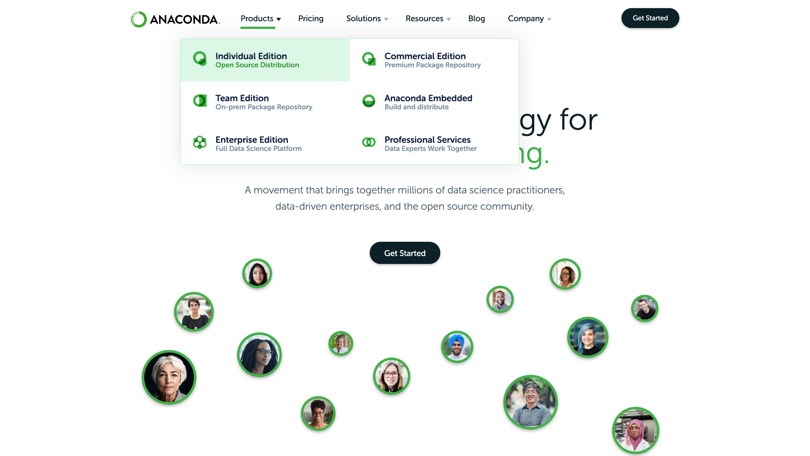
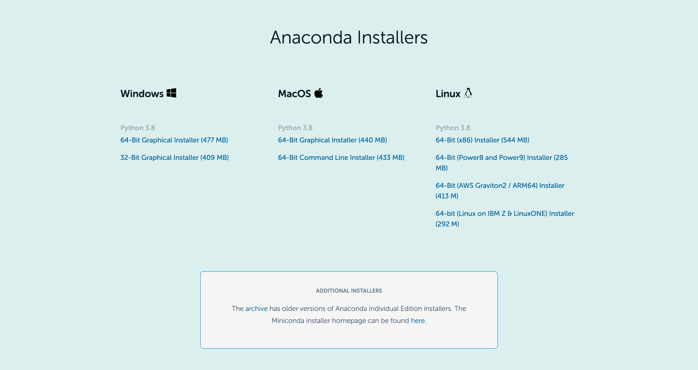
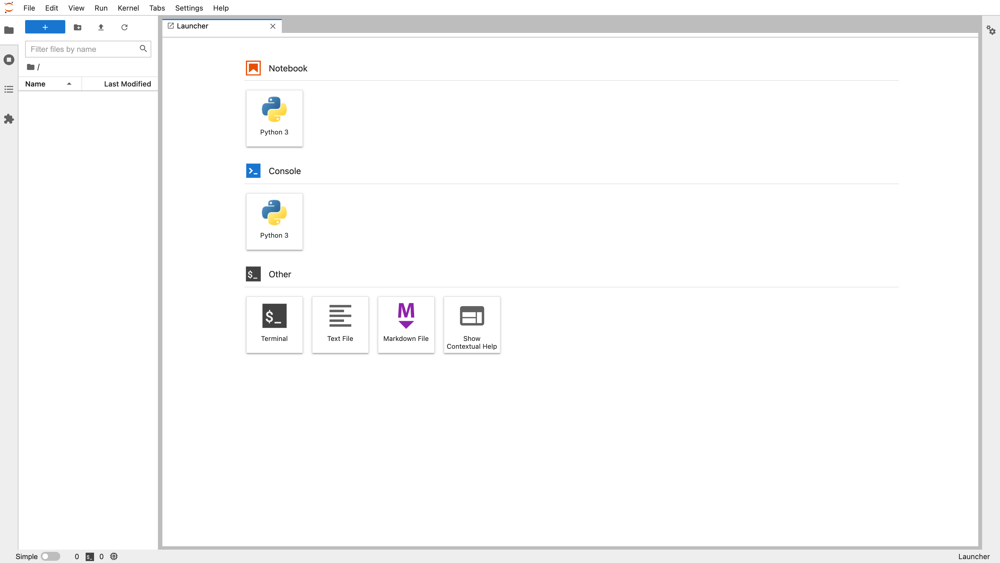
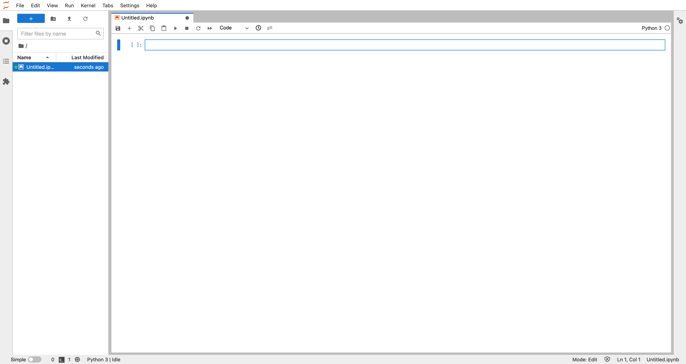
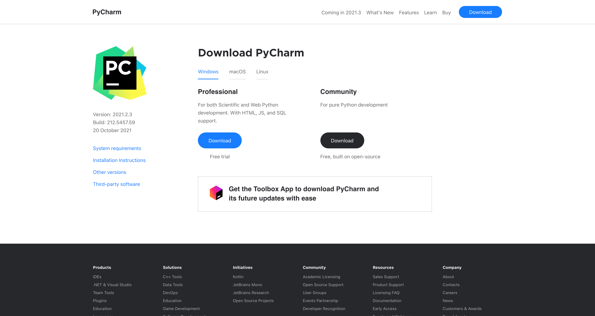
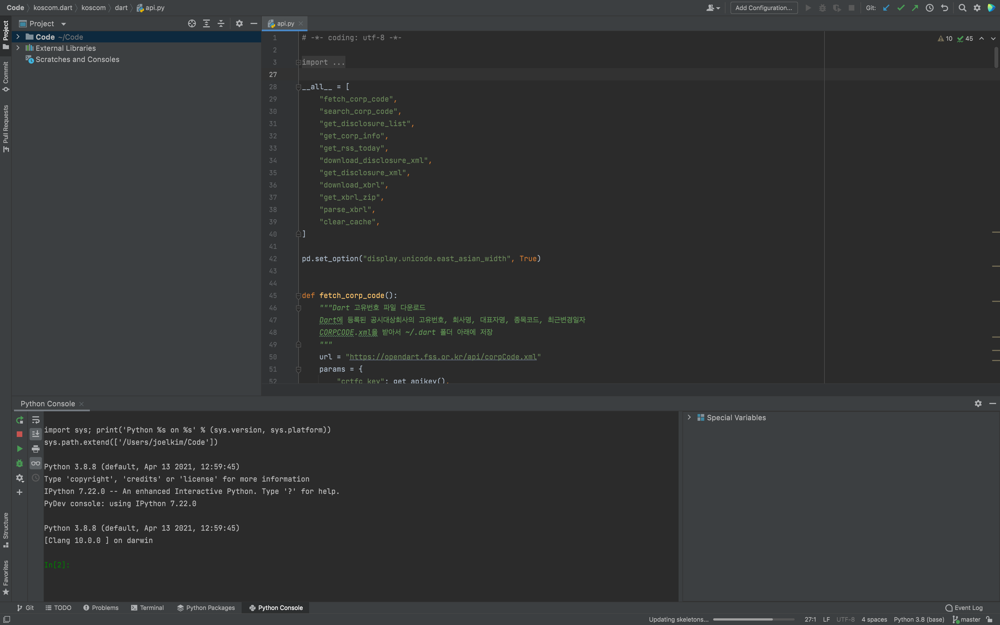

데이터 분석을 위한 도구의 소개
Contents
1.2. 데이터 분석을 위한 도구의 소개#
데이터 분석을 하자면 일단 데이터 분석을 하기 위한 도구를 갖추어야 한다. 이 책에서는 다음과 같은 도구를 사용한다.
파이썬 프로그래밍 언어
파이썬 개발 환경
데이터 분석용 파이썬 패키지
1.2.1. 파이썬 언어#
소규모의 데이터 분석을 하기위한 가장 좋은 프로그래밍 언어 중 하나가 파이썬(Python)이다. 물론 R, SAS, Julia 등 여러가지 데이터 분석용 언어들이 있으나 여기에서는 파이썬을 기반으로 데이터 분석 방법과 도구들을 설명한다. 또한 이 책에서는 독자가 파이썬 프로그래밍 언어와 패키지 사용에 대한 기초적인 지식을 가지고 있다고 가정한다.
파이썬 언어를 설치하는 방법으로는 가장 손쉬운 방법인 아나콘다(Anaconda) 배포판을 사용하는 방법을 추천한다. 아나콘다 배포판을 설치하기 위해서는 우선 다음 웹사이트에 접속한다.

페이지의 상단 메뉴에서 “Products > Individual Edition”을 클릭하면 다양한 운영환경에 대한 아나콘다 설치 프로그램 목록이 나온다. 이 중 자신이 사용하는 운영환경 및 파이썬 버전을 선택하여 아나콘다 설치 프로그램을 다운받고 설치하면 된다. 이 책에서는 64비트 아나콘다 파이썬 3.8 버전을 기준으로 설명한다.

1.2.2. 파이썬 개발 환경#
파이썬을 설치한 후에는 파이썬 개발 환경을 설치해야 한다. 가장 많이 사용되는 파이썬 개발환경은 주피터랩(Jupyter-Lab)과 파이참(PyCharm)이다.
1.2.2.1. 주피터랩#
주피터랩은 노트북과 같은 형식으로 파이썬 코드의 작성 및 실행과 문서화를 동시에 할 수 있어서 간단한 데이터 분석에 많이 사용된다. 이 책의 모든 코드는 주피터랩으로 실행하는 것을 가정하여 만들었다. (이 책 자체도 주피터랩을 사용하여 제작되었다)
만일 아나콘다를 설치했다면 이미 주피터 랩이 설치되어 있다. 만약 주피터 랩이 설치되어 있지 않는 환경이라면 커맨드라인 윈도우에서 pip 명령으로 주피터 랩을 설치할 수 있다.
pip install jupyterlab
설치가 완료되었으면 커맨드라인 윈도우에서 다음 명령어로 주피터랩을 실행시킨다.
jupyter-lab
정상적으로 실행되었다면 다음처럼 주피터랩 서버 프로그램이 실행된다.
...(생략)
Jupyter Server 1.4.1 is running at:
http://localhost:8888/lab?token=b79bcbaeaedce1c2d2fc20a2a20d88fb43b9bc8b7cec5be1
or http://127.0.0.1:8888/lab?token=b79bcbaeaedce1c2d2fc20a2a20d88fb43b9bc8b7cec5be1
Use Control-C to stop this server and shut down all kernels (twice to skip confirmation).
To access the server, open this file in a browser:
file:///Users/joelkim/Library/Jupyter/runtime/jpserver-61565-open.html
Or copy and paste one of these URLs:
http://localhost:8888/lab?token=b79bcbaeaedce1c2d2fc20a2a20d88fb43b9bc8b7cec5be1
or http://127.0.0.1:8888/lab?token=b79bcbaeaedce1c2d2fc20a2a20d88fb43b9bc8b7cec5be1
이 때 웹 브라우저에 다음 주소를 가진 웹페이지가 나타날 것이다.
http://localhost:8888/lab

이 웹페이지의 상단 메뉴에서 “File > New > Notebook”을 실행하면 새로운 노트북이 나타나면서 코드를 실행하거나 문서를 작성할 수 있다.

주피터랩의 보다 자세한 설치 및 사용법에 대해서는 다음 웹페이지를 참조한다.
1.2.2.2. 파이참 통합개발환경#
파이참 통합개발환경(IDE: Integreated Development Environment)은 파이썬 패키지를 개발하거나 복수의 파이썬 코드 파일을 다루어야 할 때 유용하다. 다음 홈페이지에서 무료 커뮤니티(community) 버전을 다운로드 받아 사용할 수 있다.
https://www.jetbrains.com/ko-kr/pycharm/

다음은 파이참 실행화면의 예다.

파이참의 자세한 설치 및 사용법에 대해서는 다음 웹 사이트를 참조한다.
1.2.3. 데이터 분석용 파이썬 패키지#
데이터 분석을 하는데는 파이썬 언어를 그대로 이용하지 않고 각각의 목적에 알맞은 여러가지 패키지를 사용하게 된다. 이 책에서 주로 사용할 데이터 분석 패키지들은 다음과 같다.
넘파이(NumPy) : 행렬연산을 위한 패키지
사이파이(SciPy) : 과학기술용 연산 패키지
판다스(Pandas) : 파이썬 기반의 데이터 분석 패키지
스탯츠모델즈(Statsmodels) : 통계, 회귀분석, 시계열 분석 패키지
사이킷런(Scikit-Learn): 머신러닝 데이터 분석 패키지
각 패키지에 대한 자세한 설명은 해당 분석에 대한 장에서 다루도록 한다.
위에서 설명한 대로 아나콘다 시스템을 설치했다면 이 책에서 소개하는 대부분의 데이터 분석용 파이썬 패키지가 설치되어 있을 것이다. 다음과 같이 pip list 명령으로 설치된 파이썬 패키지를 확인할 수 있다.
$ pip list
Package Version
---------------------------------- -------------------------
alabaster 0.7.12
anaconda-client 1.7.2
anaconda-navigator 2.1.2
anaconda-project 0.9.1
anyio 3.6.1
appdirs 1.4.4
applaunchservices 0.2.1
appnope 0.1.2
appscript 1.1.2
argh 0.26.2
argon2-cffi 20.1.0
asn1crypto 1.4.0
(이하 생략$ )
만약 원하는 패키지가 설치되어 있지 않거나 이미 설치되어 있더라도 최신 버전으로 업그레이드하고 싶은 경우에는 pip install -U 명령을 사용한다.
$ pip install -U numpy scipy pandas statsmodels scikit-learn
Requirement already satisfied: numpy in /Users/joelkim/opt/anaconda3/lib/python3.8/site-packages (1.20.1)
Collecting numpy
Downloading numpy-1.22.4-cp38-cp38-macosx_10_15_x86_64.whl (17.6 MB)
|████████████████████████████████| 17.6 MB 4.9 MB/s
(이하생략)